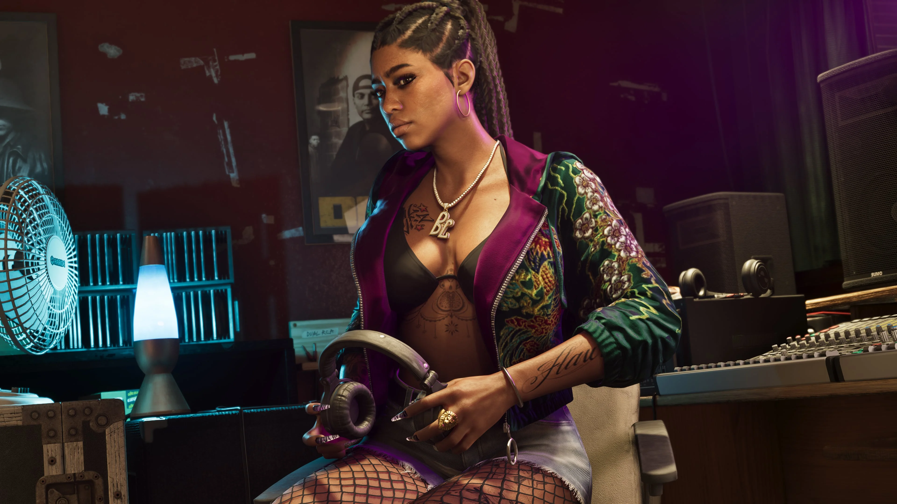
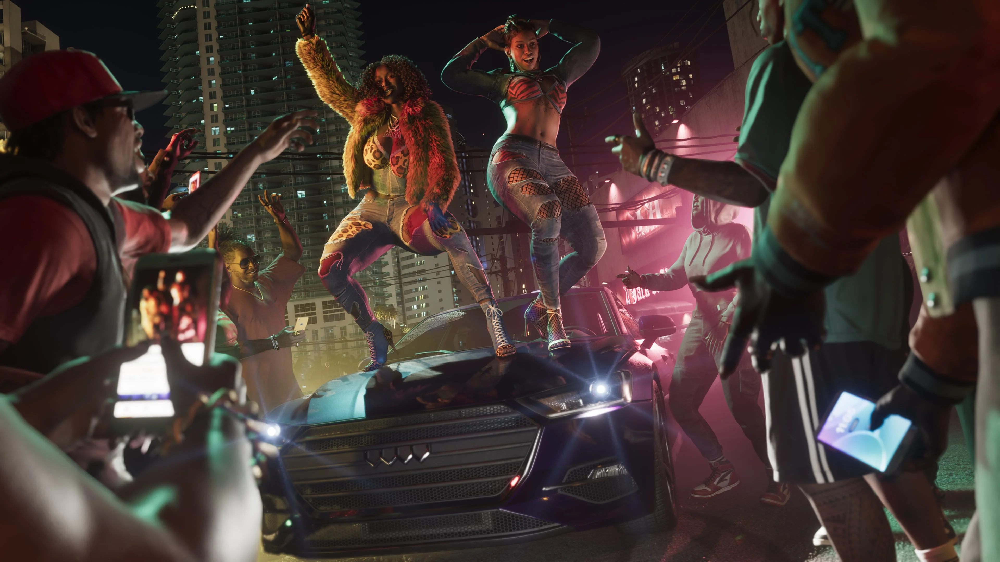
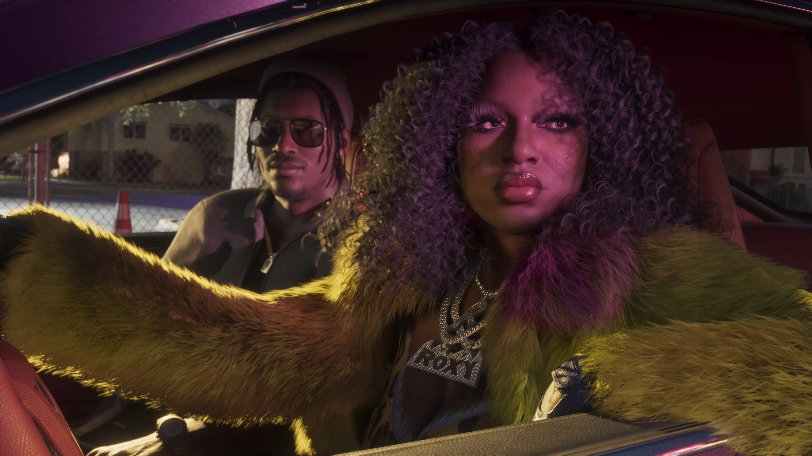

Bae-Luxe
Bae-Luxe é uma das integrantes da Real Dimez e amiga de Roxy desde o ensino médio.
As informações oficiais publicadas até agora apresentam sua história principalmente em conjunto com Roxy, sem detalhar separadamente sua biografia.

Real Dimez é a dupla formada por Bae-Luxe e Roxy em Grand Theft Auto VI.
Amigas desde o ensino médio, as duas transformaram experiências das ruas em rap, vídeos virais e uma presença constante nas redes sociais. Depois de uma primeira fase de sucesso e alguns anos turbulentos, chegaram à Only Raw Records em busca de um novo impulso.
Bae-Luxe e Roxy são amigas desde o ensino médio e formam juntas a Real Dimez.
A dupla ganhou atenção ao combinar faixas de rap com uma presença intensa nas redes sociais. A Rockstar também relaciona parte da trajetória das duas ao tempo em que tiravam dinheiro de traficantes locais.
Um primeiro sucesso gravado com o rapper local DWNPLY levou a Real Dimez a outro patamar. Cinco anos e muita confusão depois, Bae-Luxe e Roxy aparecem contratadas pela Only Raw Records e tentando repetir aquele momento de destaque.

Duas amigas de longa data que construíram juntas a identidade da Real Dimez.
Bae-Luxe é uma das integrantes da Real Dimez e amiga de Roxy desde o ensino médio.
As informações oficiais publicadas até agora apresentam sua história principalmente em conjunto com Roxy, sem detalhar separadamente sua biografia.
Roxy completa a Real Dimez ao lado de Bae-Luxe e compartilha com ela a trajetória musical da dupla.
Assim como acontece com Bae-Luxe, a Rockstar ainda não publicou uma biografia individual detalhada para Roxy.
A apresentação oficial da Real Dimez destaca justamente a combinação entre rap e redes sociais. As duas souberam transformar faixas, vídeos e exposição online em atenção para o nome da dupla.
Esse caminho teve um ponto alto com um single gravado com o rapper local DWNPLY, que levou Bae-Luxe e Roxy a um novo nível de notoriedade.
A Rockstar também deixa claro que esse sucesso não foi linear: anos e problemas se passaram até a nova fase da dupla na Only Raw Records.

A trajetória atual da Real Dimez está diretamente ligada a Dre'Quan Priest e à Only Raw Records.
A Rockstar informa que Dre'Quan assinou com a dupla enquanto tenta avançar na cena musical de Vice City. Para ele, o sucesso da Real Dimez pode ser justamente o impulso que a gravadora precisa.
Boobie Ike também está ligado a esse núcleo por meio de sua parceria com Dre'Quan e de seu investimento na Only Raw Records.

Dre'Quan assinou com a Real Dimez para a Only Raw Records enquanto busca espaço para a gravadora na cena musical de Vice City.
Conhecer Dre'QuanBoobie é parceiro de Dre'Quan e está particularmente investido no sucesso da Only Raw Records.
Conhecer BoobieQuatro screenshots oficiais de Bae-Luxe e Roxy publicados pela Rockstar Games.
A Real Dimez é formada por Bae-Luxe e Roxy.
Bae-Luxe e Roxy são amigas desde o ensino médio.
A música e uma forte presença nas redes fazem parte da trajetória pública da dupla.
Um primeiro hit com o rapper local DWNPLY levou a Real Dimez a um novo patamar.
Dre'Quan assinou com a Real Dimez para sua gravadora.
A dupla está contratada pela Only Raw Records.
As informações e imagens desta página são baseadas em materiais oficiais publicados pela Rockstar Games.
Página oficial que apresenta Real Dimez, Bae-Luxe, Roxy e suas relações com Dre'Quan Priest e a Only Raw Records.
Ver perfil oficialBiblioteca oficial de mídia da Rockstar Games, que inclui quatro screenshots identificados como Real Dimez.
Ver screenshots oficiais